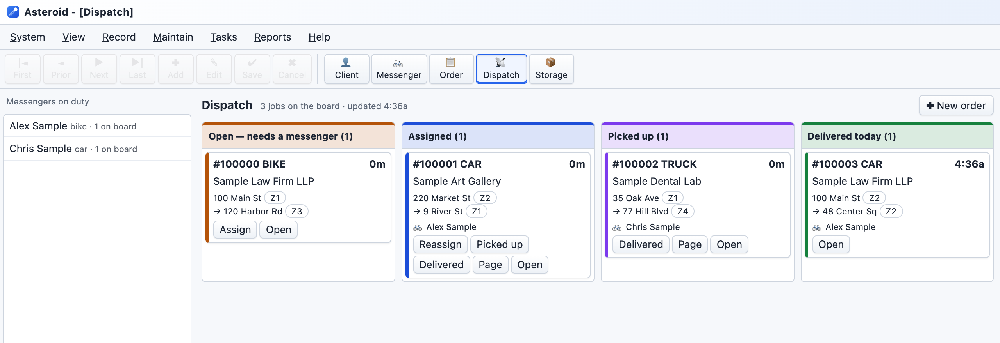
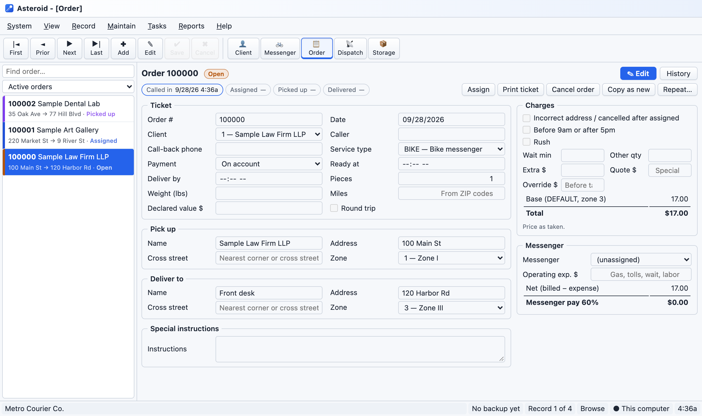

Order entry, a dispatch board, invoices and messenger pay, on screens that feel like the program you've used for years. Prices stay put, mistakes can be fixed, and your records back themselves up.
Nothing to install. Works on Mac and Windows. No card needed for the trial.

Asteroid was built for a New York messenger company that lost everything when its old dispatch program crashed with no backup. It does the same job as that program, and it can't lose your records the same way.
Record screens, menus and keyboard shortcuts like the dispatch software you're used to. No retraining, and a Classic look for anyone who wants it exactly the old way.
Backups run by themselves: to your Dropbox, Google Drive or OneDrive folder on the Desktop edition, and daily in the cloud on Online.
An order keeps the price it was taken at, even when you change your rates. Invoices never shift under you.
Edit an invoiced order and the invoice follows. Add a credit, void a bounced check, undo a change. Every change is recorded with who made it.
One program from the phone call to the paycheck.

Both start with a free 30-day trial. After it, everything you entered stays yours to open, print and export, whether or not you buy.
Desktop: in your web browser on your computer, and in the backup folder you pick. Online: in a PostgreSQL database hosted in the United States, reached only over an encrypted connection.
Save a complete backup file any time from System ▸ Backup/Restore. It opens in either edition, so you're never locked in.
Only the people you give a login to. We look at Online records only when you ask us to help. We never sell or share them.
No. Asteroid is for the office. Messengers carry on as they do now, and you can page them with a text from any order.
Yes. Copy it from Excel, Google Sheets or QuickBooks and paste it into System ▸ Utilities ▸ Import Clients. Columns are matched for you.
Nothing is deleted. Asteroid stops taking new orders, but you can still open, print, export and back up everything you entered.
Any recent Mac or Windows PC. Use Chrome or Edge for the Desktop edition's automatic backups. Online works in any browser, including on phones and tablets.
Yes. Save a backup file in Desktop and restore it in Online. Every order, invoice and client comes across.
Email zmrtnllc@gmail.com. We answer within one business day.